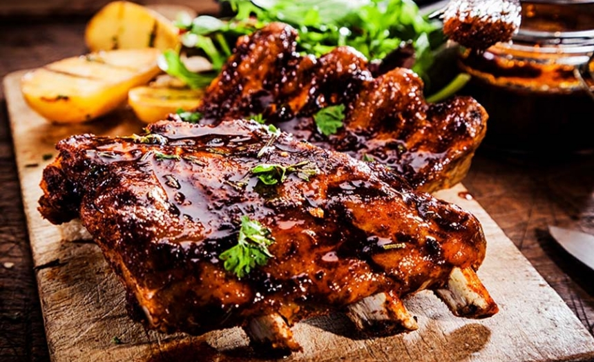
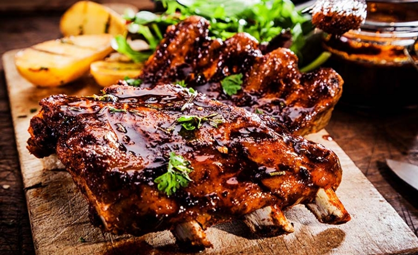
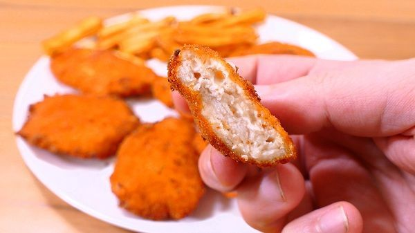
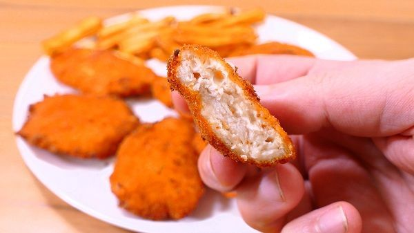

Inicio
Mi Plato Perfecto
Mis Recetas
Favoritos:
 

 
Historial:
Receta de Pescado Frito
21 de Febrero del 2018
Hoy veremos una receta de pescado frito muy sencilla de preparar y que podrás combinar con todas las salsas que desees. Luego de que veas cómo preparar pescado frito, de seguro sentirás una fuerte tentación por probarlo en casa. No te resistas; ¡es una delicia!
Si bien no es recomendable para nuestra salud consumir muchos alimentos fritos, de vez en cuando no viene nada mal. Además, el pescado es muy nutritivo y esta es una de las tantas formas de incorporarlo a nuestra dieta diaria. ¡Manos a la obra! Que la cocina nos está esperando.
Ingredientes:
500 gramos de filetes de pescado frescos 1 ½ taza de pan rallado 1 cucharadita de sal 1 huevo ½ taza de agua o leche Sal y pimienta a gusto Aceite para freír
Preparación:
Calienta el aceite hasta que sea adecuado para freír. En un recipiente mezcla el pan rallado con la sal. En otro recipiente, mezcla el huevo con el agua, ¼ cucharadita de sal y un poco de pimienta.
Coloca cada filete de pescado en el batido de huevo, luego colócalo en el recipiente con el pan rallado y empánalos bien. Haz presión para que el pan rallado se adhiera.
Fríe cada filete de pescado durante 2 o 3 minutos, o hasta que esté dorado en ambos lados. Luego escurre el exceso de aceite colocando los filetes en un plato con servilletas.
Receta de Costilla Barbacoa
21 de Enero del 2018
Ingredientes Costillas:
2 costillares 1/2 taza de azúcar morena 1 1/2 cucharadas de pimienta negra recién molida 1 cucharada de sal kosher 1 1/2 cucharaditas de pimentón 1 cucharadita de ajo en polvo 1 cucharadita de cebolla en polvo 1/2 cucharadita de pimienta de cayena
Ingredientes Salsa Barbacoa:
1/4 taza de azúcar morena más 2 cucharadas 1/4 cucharadita de pimienta de cayena 1/4 cucharadita de hojuelas de pimiento rojo 1/2 cucharadita de ajo en polvo 3 tazas de kétchup 1 1/2 taza de vinagre de sidra de manzana 1 cucharadita de salsa inglesa 1/2 cucharadita de sal kosher
Preparación:
Para las costillas: Seca las costillas con toallas de papel. Combina el azúcar morena, la pimienta negra, la sal, el pimentón, el ajo en polvo, la cebolla en polvo y la pimienta de cayena en un tazón pequeño. Cubre completamente ambos lados de las costillas con el adobo seco, apretando la carne. Envuelve cada costillar firmemente con papel aluminio y refrigera por lo menos 6 horas o durante la noche.
Precalienta el horno a 300 grados F/150 grados C. Coloca las costillas envueltas en papel aluminio en una bandeja y hornea durante 2 horas. Deja enfriar durante 15 minutos, luego retira el papel aluminio con cuidado y desecha.
Para la salsa barbacoa: Mientras tanto, coloca el azúcar, la pimienta, el pimiento rojo y el ajo en polvo en una cacerola mediana. Mezcla bien para que no tenga grumos. Agrega la salsa de tomate, el vinagre de sidra, la salsa inglesa y la sal y calienta a fuego lento. Cocina, revolviendo ocasionalmente, hasta que el azúcar se derrita y la salsa espese un poco, unos 5 minutos. Obtendrás 3 1/4 tazas de salsa aproximadamente.
Precalienta la parrilla a fuego medio alto. Unta las costillas generosamente con la salsa barbacoa y ásalas hasta que la salsa comience a oscurecerse, aproximadamente 10 minutos. Corta las costillas y sirve caliente con más salsa barbacoa al lado.